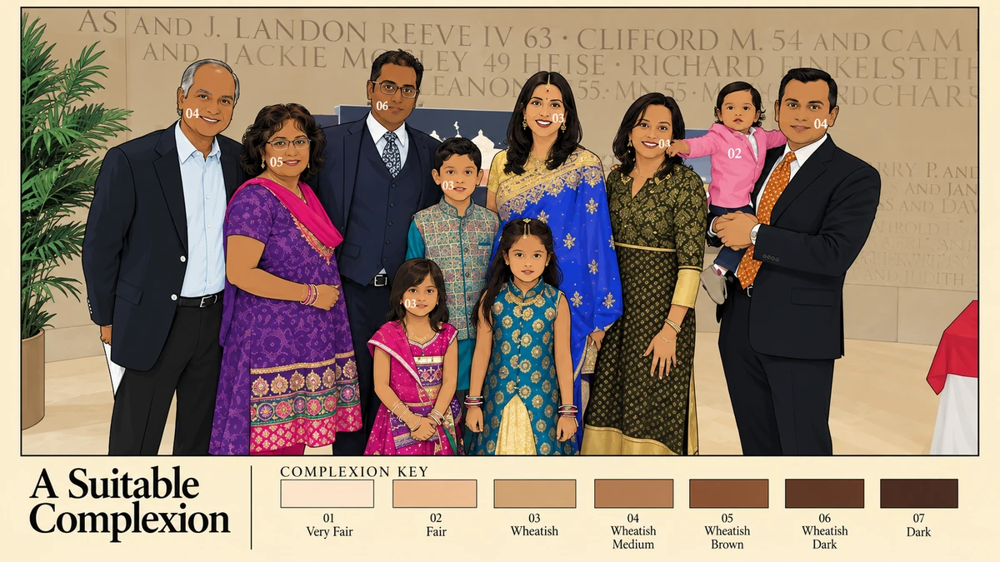
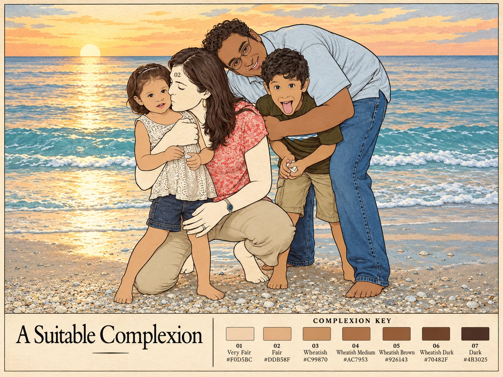

STUDY / NOT FINAL
STUDY / NOT FINAL
Gathering / 01Provisional painting study · final artwork to follow
ASC—01The people are real. The numerical logic imposed on them is not.
These are working versions of the family paintings, not finished or approved works. The six originals supplied for this review are presented here in the artist’s requested order. Click any work to see its full composition and complexion key. Their palette accuracy, facial treatment and publication permissions remain subject to individual review.
STUDY / NOT FINAL
 STUDY / NOT FINAL
STUDY / NOT FINAL
 STUDY / NOT FINAL
STUDY / NOT FINAL

STUDY / NOT FINAL STUDY / NOT FINAL
STUDY / NOT FINAL

STUDY / NOT FINALThe numbers and complexion categories are part of the artwork’s critique, not judgments endorsed by the exhibition. These studies will be replaced before public release.
This is the fixed seven-colour key used throughout the series. The wording reflects a documented matrimonial classification; the hexadecimal colours and sample-point procedure are inventions of the artist. No shade represents a biological group or a measure of worth.
Select a swatch to see how a single colour turns into a whole-person label. Toggle between filled and unfilled to see the two permitted states in the paintings.
This interactive specimen is only a demonstration of the artist's rules. It never samples or classifies a visitor.
“They turn your skin to paperwork and file you by your head.”
In the song this concerns biometric systems. In the paintings the filing system is familial, historical and socially constructed.
One colour per person. All visible skin is filled consistently, or all is left blank and numbered. Hair, clothing, jewellery, expressions and surroundings stay recognisable. Each painting repeats the exact same complexion key.
Some figures have no fill at all. Their assigned number makes the viewer aware of the temptation to complete the exercise.
Read the complete rules and ethics →